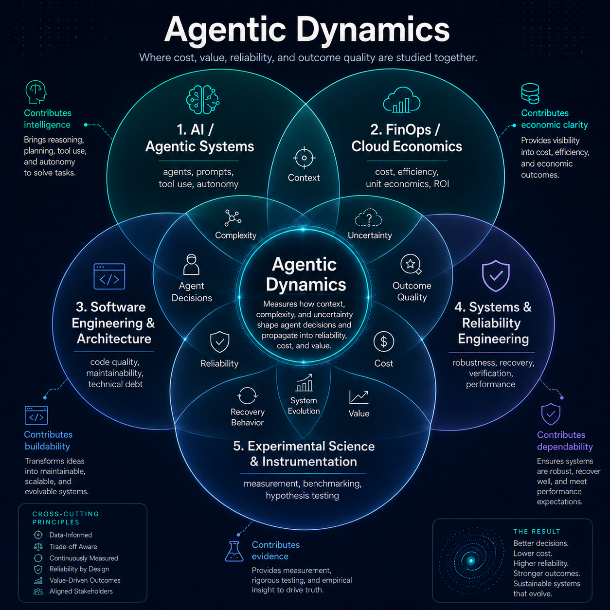

Cost, reliability, and debt are not a rate card — they are properties of how an agent behaves under change: how it handles churn, absorbs a regression, compounds spend across a five-session arc, and stays correct when the task shifts underneath it. Agentic Dynamics is the instrument that measures that behavior and turns it into numbers a business can act on.
“You cannot buy agent reliability at a fixed price. We built the instrument that measures the function it's actually a product of.”

The instrument perturbs an agent's task and environment along ten operators — corrupting the spec, mutating the objective, or disrupting the reasoning process — and measures how the agent recovers, adapts, flails, or compounds cost. Each dynamic below maps one-to-one onto a number a business already tracks.
| Dynamic | Business outcome it is |
|---|---|
| Basin escape | cost of change — how an agent handles churn, requirement drift, spec rot |
| Recovery cost | cost of a regression — what an incident costs before it's fixed |
| Snowball | maintenance growth — why the 5th change costs more than the 1st |
| Flail | wasted spend — runs that produce reasoning but no deliverable |
| Grit | reliability under stress — does it stay correct as the task shifts under it |
| Technical debt | maintenance liability — what the agent leaves behind, independently reviewed |
All four are read directly off the live corpus below — 772 story sessions, 344 single-task perturbation reports, and 205 worktrees, across 7 models and 10 seeded perturbation operators.
DeepSeek v4 Flash averages $0.014/session [M] with a 100% independently-run test pass rate (2,304/2,306 tests) [M]. Run solo across the routed task set, GPT-5.6 Sol averages $0.446/session [C] at the same 100% correctness [C]. Equal measured outcome, ~33× cost spread. There is no fixed price for "correct" — it depends entirely on which model does the work and how it's routed.
routing.strategies (deepseek-v4-flash avg_cost_per_session vs gpt-5.6-sol_only avg_cost) · methodology.htmlOn the task_manager_api story, Claude Fable 5 averages 70% correctness against DeepSeek v4 Pro's 98% [C]. Independently, the reasoning-divergence pipeline finds Claude cascades earliest under perturbation (step 1.14) and never recovers within the trace (0% of traces self-correct), where DeepSeek and GPT-5.6 self-correct 86% of the time [C]. Model tier and reliability are not the same axis.
Across 106 reviewed cells, the correlation between how many tests a model's own session reports and how often an independent reviewer later calls the change "worse" is −0.154 [C] — weakly negative, nowhere near the strength that would let a "100% pass rate" self-report stand in for verification. Model families also write wildly different numbers of tests at similar pass rates (Luna ~10/story vs Haiku ~193/story) [M]. Correctness against your own tests and verification against what the codebase actually needs are different measurements.
labs.verification_value (correlation_tests_vs_worse_rate, n=106) · evidence.htmlOn 2026-08-15, an agent_task worker given one high-level goal — "instrument the missing ledger fields and re-run contaminated cells" — diagnosed 16 stale-taxonomy cells and up to 85 mutation-fallback cells on its own, authored a re-run inventory, and executed it: it enqueued ~33 contaminated cells and spawned 8 parallel workers across 3 providers, taking the queue from 142 to 175 jobs. Nobody wrote that re-run script. The adapt loop's core primitive — observe, propose, execute — emerged on its own.